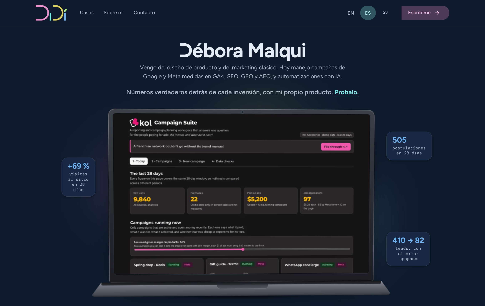
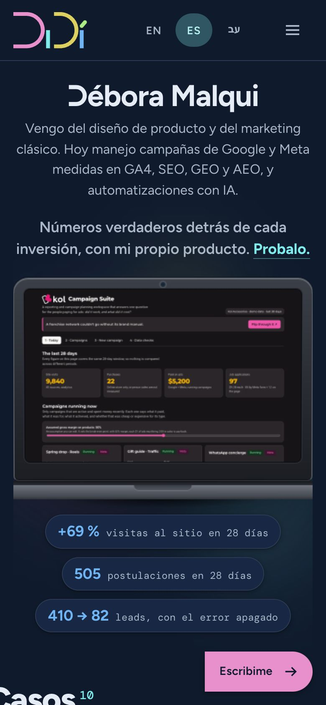
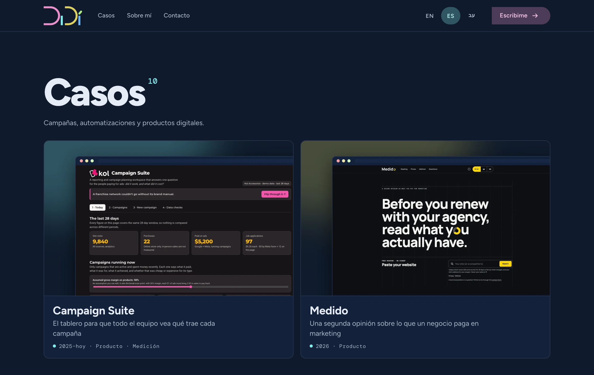
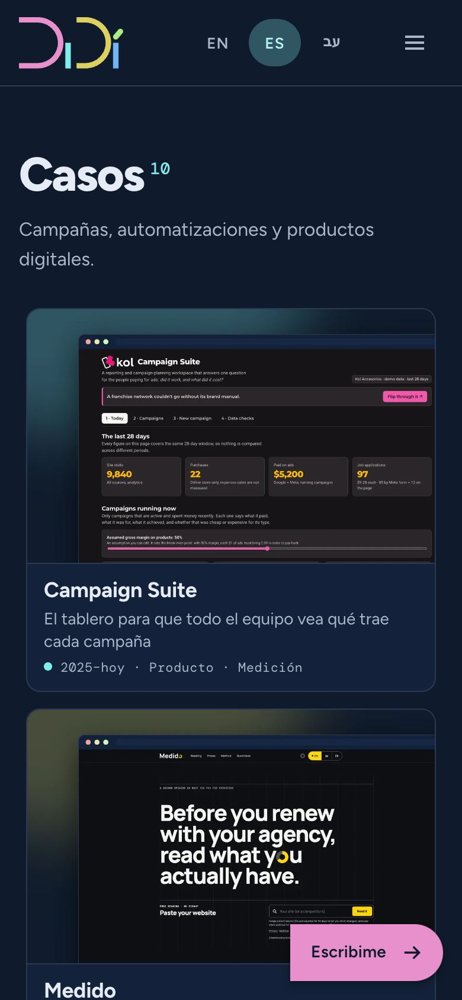
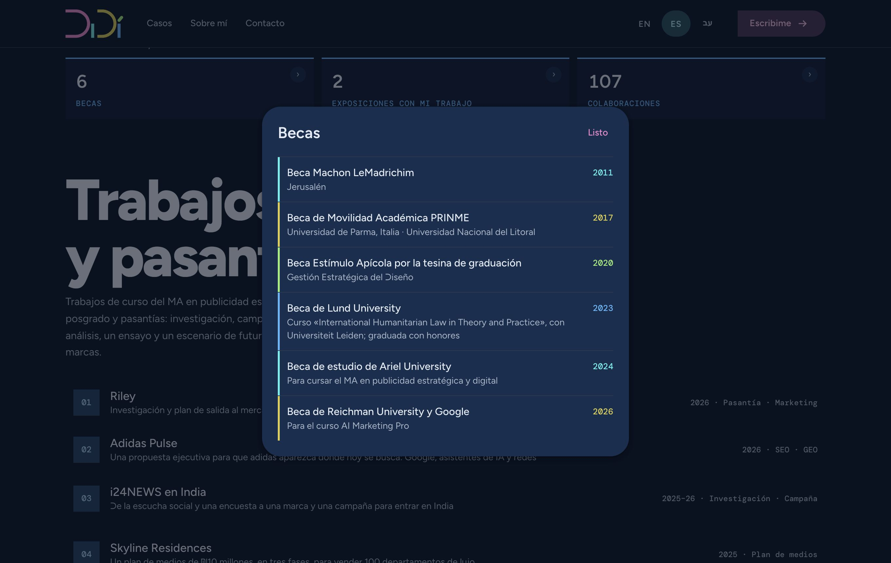
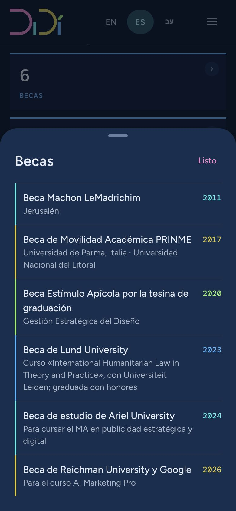
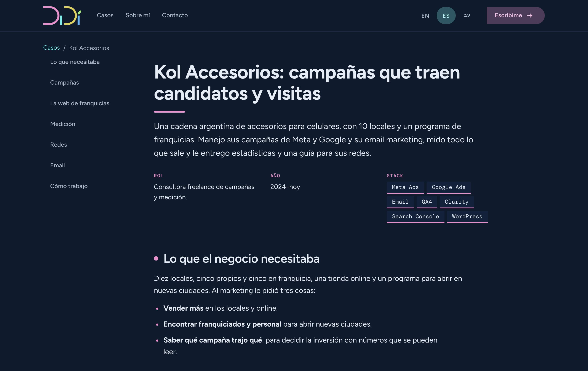
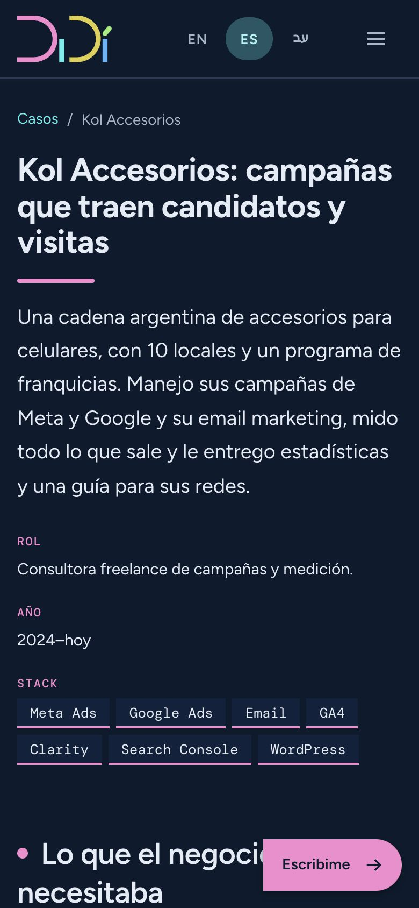

DiDí, el sistema
Cómo se ve, se mueve y se construye mi portfolio. Un color por función en la interfaz y un color por tipo de trabajo en los casos, tres formas sacadas del logo y una fuente propia con la D sin palo.
Este manual dice lo que hace hoy www.malquidebora.com. Las cifras de contraste y de verificación se calculan; no están escritas a mano.
Qué cambió desde la v1
El sistema creció mientras se construía el sitio: más color, más movimiento y una portada nueva. Esta es la lista corta; el detalle está en cada sección.
Lo nuevo
- Color por tipo de trabajo. Campañas en rosa, producto en celeste, UX en amarillo, automatización en verde y académicos en azul. Cada caso toma su color en los detalles; los enlaces y los botones no cambian (sección 4).
- Portada con la Campaign Suite. Una laptop que se abre al cargar, con tres cifras alrededor, que sigue al mouse en computadora y se inclina al bajar la página en celular (sección 20).
- Casos en dos tamaños. Campaign Suite y Medido en grande; los otros ocho en filas completas de 2 (celular y tableta) o 4 (computadora).
- Títulos de sección grandes, en DiDi Sans ExtraBold, con la cantidad al lado en DiDi Mono (sección 5).
- Movimiento de la vitrina: los casos y los títulos entran al bajar la página, el título de una tarjeta viaja hasta el título del caso al abrirlo, y la imagen de cada trabajo académico sigue al mouse (sección 10).
- Procesos que se ven: una barra de lectura del color del caso que avanza al bajar, y un indicador de carga amarillo mientras llegan las imágenes (secciones 10 y 18).
- Hojas de reconocimientos: becas, exposiciones y colaboraciones se abren en una hoja que sube desde abajo en celular y en una tarjeta centrada en computadora.
- Piezas para mostrar trabajo: monitor que se desplaza, cuaderno que pasa las hojas, prototipo que se puede tocar, mosaico de piezas y videos con miniatura (sección 21).
- Hebreo con su letra: la Heebo va incluida en el sitio, y el nombre aparece también en letras hebreas.
- Velocidad: 100 de 100 en Lighthouse, la medición de Google, en celular y en computadora (sección 12).
Lo que la v1 decía y ya no se hace
| La v1 decía | Hoy |
|---|---|
| Un color, una función: rosa solo acción, verde solo verificado. | En los componentes sigue igual. En los casos, los cinco colores también marcan el tipo de trabajo. |
| Etiquetas de confianza (verificado, reportado, inferido), «Lo que no salió», «Sin mejora medible todavía». | La web es una vitrina: tono seguro y concreto, sin notas de método. Cada cifra tiene su fuente documentada, aunque no se muestre en la página. |
| Cliente con nombre de fantasía: Nido Accesorios. | Se llama por su nombre real: Kol Accesorios. «Nido» no se usa más. |
| Sin título ni frase hasta el posicionamiento; «Disponible desde [fecha]». | La portada tiene una frase fija, que elegí. No se muestra fecha de disponibilidad. |
| Portada con «Ver los casos», «Descargar CV», cuatro cifras y pestañas por categoría. | Portada con la laptop y tres cifras; casos en tarjetas con portada; sin pestañas. |
| Nada dura más de 400 ms, los títulos no se animan, no hay transición entre páginas, nada se mueve solo. | Los componentes siguen en 400 ms o menos. La vitrina tiene su propio movimiento, más largo. El logo sigue quieto y todo se apaga con «reducir movimiento». |
| Tarjetas en D abierta, con el lado recto a la izquierda. | Las tarjetas de casos tienen las cuatro esquinas redondeadas (12 px). |
| Barra de arriba de 64 px con el logo de 84 px; «Escribime» relleno. | Barra de 72 px con el logo de 88 px; «Escribime» tonal en D. |
| Fechas con día y mes en todo el documento. | Fechas solo con año. |
Concepto y voz
El portfolio es la prueba de lo que hace, no un catálogo de todo lo que hizo. La web es una vitrina: tono seguro y concreto, con cifras verdaderas.
Cuatro principios
1 · Cifras verdaderas, no adjetivos
Un resultado se muestra con la cifra y lo que mide. Cada cifra tiene su fuente documentada; si no la tiene, no se publica.
2 · Vitrina, no informe
Tono seguro y concreto. Sin disculpas, sin notas de método, sin etiquetas de confianza en la página.
3 · Un color por función, un color por tipo
En la interfaz, cada color del logo hace un trabajo. En los casos, también dice qué tipo de trabajo es.
4 · El sistema se explica solo
Cada regla tiene una frase. Si necesita dos párrafos para justificarse, se simplifica.
Voz
| Regla | Cómo se aplica |
|---|---|
| Primera persona, verbo concreto | «Vengo del diseño de producto», «Hoy manejo campañas». No «soy experta en». |
| Cifra + qué mide | «505 postulaciones en 28 días». La fuente queda documentada, no en la página. |
| Rol exacto | «Dirigí y validé el desarrollo hecho con asistentes de IA.» Nunca «programé» ni «desarrollé» si no es cierto. |
| Sin adjetivos que no se puedan medir | Fuera: excelente, innovador, apasionada, resultados increíbles. |
| La frase de la portada es fija | «Vengo del diseño de producto (UX/UI) y del marketing clásico. Hoy manejo campañas de Google y Meta medidas en GA4, SEO, GEO y AEO, y automatizaciones con IA.» Lo mismo en Google, en los datos estructurados y en la imagen para compartir. |
| Voseo en las llamadas a la acción | «Escribime», «Probalo». El resto del texto no habla de vos. |
Nombre
En el texto, el nombre es Débora Malqui; en los textos en hebreo, דבורה מלכי, en letras hebreas. DiDí es la marca gráfica: aparece como logo, firma y favicon, no como nombre propio en frases. Los clientes van con su nombre real (Kol Accesorios). Medido, su propio producto, tiene un caso en el sitio; quien lo usa se describe como «un negocio».
Logo
El logo es la forma de todo el sistema: dos D abiertas sin asta, dos barras y un acento inclinado. La D rosa entra cortada por el borde izquierdo, a propósito.
| Elemento | Medida (u) | Regla |
|---|---|---|
| Trazo | 20 | Único: D, barras y acento. No hay dos pesos. |
| D rosa y D amarilla | Ø190 · radios 95 y 75 | Mismo tamaño, centros en y 97. La rosa entra cortada en x 0; la amarilla tiene extremos planos en x 210. |
| Barras celeste y azul | 20×95 · y 97–192 | El tope coincide con el centro de la D. |
| Huecos | 7 · 21 · 7 | D→barra 7, barra→D 21: se lee "Di" y "Dí" como dos bloques. |
| Acento verde | 46×20 · −50° · radio 10 | Despegado 12 u de la barra azul, con su cabeza inferior sobre el eje de la barra. |
| Colores | #E890CC #80ECEC #DCD060 #70B4F4 #ACEC84 | Exactos del archivo original. No se derivan ni se oscurecen. |
Versiones
En la barra del sitio
El logo va a la izquierda de la barra de arriba, a 88 px de ancho, sobre azul noche y en sus colores. La barra mide 72 px de alto. En hebreo, la barra se espeja pero el logo no: es una imagen.
Área de respeto y tamaño mínimo
El área de respeto es x = 40 u (dos trazos, 21 % de la altura), medida desde el borde más saliente. A la izquierda el logo sangra contra el borde del contenedor, o guarda la misma x completa: nunca un margen intermedio, que haría parecer error al corte.
| Uso | Mínimo | Por qué |
|---|---|---|
| Logo completo, pantalla | 96 px de ancho | Trazo de 5 px y hueco de 12 u de 3 px. Por debajo, el acento se funde con la barra. |
| Logo completo, impresión | 25 mm | Misma proporción. |
| Debajo de 96 px | Monograma D + í | Es el recorte del mismo vector, con favicon calzado a 32 y 16 px. |
Sobre qué fondo
Los colores del logo son pasteles pensados para fondos oscuros. Sobre azul noche pasan con 5,4:1 o más. Sobre fondo claro no pasan (celeste y verde quedan en 1,3:1 sobre hueso): ahí va la versión de una tinta oscura. No existe una versión "con colores oscurecidos": es el logo o es una tinta.
Usos incorrectos
Deformarlo: el trazo deja de ser único.
Un solo color: pierde las funciones.
Sombra o efecto.
Cerrar la D rosa con corte plano: se pierde "entra en cuadro".
Rotarlo o inclinarlo: el único ángulo es el del acento.
Los colores originales sobre claro: no pasan contraste.
El logo no se anima
Se probó una entrada animada de 1,3 segundos y se descartó en 2026. El logo aparece quieto, siempre: tampoco se mueve en la transición entre páginas, porque la barra de arriba queda fija mientras cambia la página (sección 10).
Color
Superficie azul noche y cinco colores del logo. Cada uno hace un trabajo en la interfaz y, en los casos, nombra un tipo de trabajo.
Un color por función
| Color | Función | Forma | Regla | Contraste |
|---|---|---|---|---|
Acciónrosa #E890CC--d-accion | Lo que te pido que hagas: el botón «Escribime», el botón flotante de contacto, el cierre de cada caso, «Listo» en las hojas. Es la primera D: la que abre. En los casos, además, marca el tipo Campañas. | D abierta | Un botón relleno por vista. Nunca para estados. | 7.6:1 sobre superficie 7.6:1 texto oscuro encima |
Navegación y fococeleste #80ECEC--d-nav | Dónde estás y qué está activo: ítem actual, idioma elegido, migas, enlaces, índice del caso, anillo de foco. Es la primera barra: marca posición. En los casos, además, marca el tipo Producto. | Barra | Nunca como fondo de texto largo. Los enlaces son siempre celestes, también dentro de un caso de otro color. | 12.5:1 sobre superficie 12.5:1 texto oscuro encima |
Atenciónamarillo #DCD060--d-atencion | Lo que hay que mirar: aviso, dato destacado, progreso, el único error. Es la segunda D, abierta a la derecha: señala. En los casos, además, marca el tipo UX. | D abierta (a la derecha) | Siempre con ícono o texto, nunca solo color. | 10.9:1 sobre superficie 10.9:1 texto oscuro encima |
Datoazul #70B4F4--d-dato | Lo medido: cifras, metadatos, campos, tablas, código. Es la segunda barra: contenido, no decoración. En los casos, además, marca los trabajos académicos. | Barra, radio 0 | Siempre radio 0. Cifras en mono o tabulares. | 7.8:1 sobre superficie 7.8:1 texto oscuro encima |
Verificadoverde #ACEC84--d-ok | Lo comprobado: verificado, en vivo, disponible. Es el acento, chico e inclinado: el detalle que confirma. En los casos, además, marca el tipo Automatización. | Píldora | Como estado, solo si hay algo comprobado detrás. Como tipo, solo en detalles del caso. | 12.4:1 sobre superficie 12.4:1 texto oscuro encima |
Superficies
El fondo es azul noche (#0F1B2D), nunca negro puro. Los niveles de contenedor suben en claridad para marcar jerarquía; en un tema oscuro, el tono sustituye a la sombra.
Superficie base
14.6:1 texto
Hundida (fondo del documento)
15.5:1 texto
Contenedor más bajo
15.7:1 texto
Contenedor bajo
13.5:1 texto
Contenedor
12.5:1 texto
Contenedor alto
11.4:1 texto
Contenedor más alto
10.4:1 texto
Contenedores tonales de función
Cuando un color de función rellena una superficie (tarjeta de atención, ficha seleccionado), se usa su versión tonal: el color al 28 % sobre la superficie, con el texto en el mismo color aclarado. Así el texto largo nunca va sobre el color pleno.
texto #F2C2E3 · 6.5:1
borde/acento #E890CC
texto #B9F5F5 · 6.6:1
borde/acento #80ECEC
texto #ECE5A8 · 6.7:1
borde/acento #DCD060
texto #B0D6F9 · 6.4:1
borde/acento #70B4F4
texto #D1F5BB · 6.7:1
borde/acento #ACEC84
Matriz de contraste (calculada)
| Color sobre → | surface | dim | lowest | low | container | high | highest |
|---|---|---|---|---|---|---|---|
| rosa #E890CC | 7.6:1 texto | 8.2:1 texto | 8.2:1 texto | 7.1:1 texto | 6.6:1 texto | 6.0:1 texto | 5.4:1 texto |
| celeste #80ECEC | 12.5:1 texto | 13.3:1 texto | 13.4:1 texto | 11.6:1 texto | 10.7:1 texto | 9.8:1 texto | 8.9:1 texto |
| amarillo #DCD060 | 10.9:1 texto | 11.6:1 texto | 11.7:1 texto | 10.1:1 texto | 9.4:1 texto | 8.6:1 texto | 7.7:1 texto |
| azul #70B4F4 | 7.8:1 texto | 8.4:1 texto | 8.4:1 texto | 7.3:1 texto | 6.8:1 texto | 6.2:1 texto | 5.6:1 texto |
| verde #ACEC84 | 12.4:1 texto | 13.2:1 texto | 13.4:1 texto | 11.5:1 texto | 10.7:1 texto | 9.7:1 texto | 8.8:1 texto |
| texto #E6ECF5 | 14.6:1 texto | 15.5:1 texto | 15.7:1 texto | 13.5:1 texto | 12.5:1 texto | 11.4:1 texto | 10.4:1 texto |
| texto variante #AAB7C9 | 8.5:1 texto | 9.1:1 texto | 9.1:1 texto | 7.9:1 texto | 7.3:1 texto | 6.7:1 texto | 6.0:1 texto |
| contorno #6A809E | 4.3:1 gráfico | 4.6:1 texto | 4.6:1 texto | 4.0:1 gráfico | 3.7:1 gráfico | 3.4:1 gráfico | 3.0:1 gráfico |
Fórmula WCAG 2.x. "texto" ≥ 4,5:1 · "gráfico" ≥ 3:1 (bordes, íconos, logo). El contorno #6A809E se eligió para llegar a 3:1 en todas las superficies: el primero que probé (#4F6079) daba 2,7:1 y falló.
Reglas
- Un elemento, una función. Si una tarjeta tiene acción y dato, el color va en el botón y el dato queda en un baldosa recto.
- Un solo botón relleno rosa por vista. Es la acción principal; las demás son tonales, con contorno o de texto.
- Texto sobre color pleno siempre #0F1B2D. En tonal, el color aclarado.
- El color nunca es el único portador de significado. Cada función lleva además forma, ícono o texto.
- Verde, como estado, solo con algo comprobado detrás. Como tipo de trabajo, marca automatización (ver abajo).
- No hay tema claro. Para impresión y CV: logo de una tinta sobre blanco, texto negro.
Color por tipo de trabajo
Cada caso tiene un tipo, y cada tipo toma un color del logo. El color aparece en la tarjeta de la portada (un punto antes del año y un brillo al pasar el mouse) y en toda la página del caso, siempre en detalles: nunca en el fondo ni en el texto.
| Tipo | Color | Casos de hoy |
|---|---|---|
| Campañas | rosa --d-accion | Kol Accesorios, Communiqué |
| Producto | celeste --d-nav | Campaign Suite, Medido, Santo Tomé |
| UX y UX/UI | amarillo --d-atencion | Waycare, Clash, Bplay, MAC |
| Automatización | verde --d-ok | Sistemas de trading |
| Trabajos académicos y pasantías | azul --d-dato | La sección «Trabajos académicos y pasantías» |
Dentro del caso, el color del tipo va en: la línea bajo el título, el punto de cada subtítulo, las viñetas, las cifras y su etiqueta, los encabezados de tabla, las fichas de datos, el ítem activo del índice, la pestaña elegida y los puntos de las galerías.
- Los enlaces siguen celestes y los botones siguen rosas, en cualquier caso: son funciones, no decoración.
- Un tipo nuevo va en celeste hasta que tenga su color.
- Si un caso tiene dos tipos (por ejemplo «Producto · Medición»), manda el primero.
Otras listas con color
- Becas y exposiciones: cada ítem lleva una barra a la izquierda y el año en color, alternando celeste, amarillo, verde y azul. Sin rosa: el rosa es del botón «Listo» de la hoja.
- Colaboraciones principales: cada empresa lleva un subrayado de color, en el orden rosa, celeste, amarillo, verde y azul, y enlaza a su web.
Etiquetas de confianza
El método de los informes (verificado, reportado, inferido) se volvió componente, con color y forma propios:
Tipografía
Una fuente propia derivada de Figtree y DM Mono, con una sola modificación: todas las D mayúsculas son sin palo, como la del logo.
DiDi Sans y DiDi Mono
Dos años con una cadena de accesorios sin equipo de marketing: 27 páginas en vivo y un protocolo que encontró 1.531 postulaciones de 3 personas. Dirigí el desarrollo, definí cada dato y lo validé contra la fuente.
DiDi Sans (cuerpo, títulos, botones) parte de Figtree, de diseño geométrico y redondeado, afín a las curvas del logo. DiDi Mono (etiquetas, cifras, metadatos, código) parte de DM Mono. Las dos son OFL: se pueden modificar y redistribuir conservando la licencia. Se renombraron para no usar los nombres originales.
La D sin palo
La D del logo no tiene asta vertical: línea de arriba, semicírculo, línea de abajo. En la fuente, la D mayúscula se dibujó igual, con el trazo del peso correspondiente (el ancho del palo de la "I" de cada peso). Es una sola modificación: el resto de las letras es la fuente original. La d minúscula no se toca: sin palo dejaría de ser una d.
| Peso | CSS | Trazo (1000 u/em) | Muestra |
|---|---|---|---|
| Regular | 400 | 84 | DiDí |
| Mediano | 500 | 99 | DiDí |
| SemiBold | 600 | 116 | DiDí |
| Bold | 700 | 137 | DiDí |
| ExtraBold | 800 | 161 | DiDí |
AD OD ED VD
DÓNDE DIDÍ
El costo de lectura, y la reserva
Por eso las dos fuentes traen la D clásica como característica OpenType ss20, apagada por defecto. Si se decide usarla en los párrafos de lectura, es una línea: .d-prose { font-feature-settings: "ss20"; }.
Dos años con una cadena de accesorios. Dirigí el desarrollo, definí cada dato y lo validé. Del diagnóstico al tablero, nada se da por sentado: ni el DNS ni el dominio.
Dos años con una cadena de accesorios. Dirigí el desarrollo, definí cada dato y lo validé. Del diagnóstico al tablero, nada se da por sentado: ni el DNS ni el dominio.
Escala de la interfaz
| Rol | Muestra | Tamaño / interlineado (px) | Peso | Espacio entre letras | Uso |
|---|---|---|---|---|---|
| display-l | Débora Malqui · Dirigí | 57 / 64 | 700 | −0,25 px | No se usa: demasiado grande para el portfolio. |
| display-m | Débora Malqui · Dirigí | 45 / 52 | 700 | 0 | Títulos grandes de los componentes (escritorio). |
| display-s | Débora Malqui · Dirigí | 36 / 44 | 700 | 0 | Títulos grandes de los componentes (celular); cifras grandes. |
| headline-l | Débora Malqui · Dirigí | 32 / 40 | 600 | 0 | Título de sección. |
| headline-m | Débora Malqui · Dirigí | 28 / 36 | 600 | 0 | Título de caso. |
| headline-s | Débora Malqui · Dirigí | 24 / 32 | 600 | 0 | Subtítulo, título de diálogo. |
| title-l | Débora Malqui · Dirigí | 22 / 28 | 600 | 0 | Título de tarjeta. |
| title-m | Débora Malqui · Dirigí | 16 / 24 | 600 | +0,15 px | Título de lista, ítem destacado. |
| title-s | Débora Malqui · Dirigí | 14 / 20 | 600 | +0,1 px | Encabezado de tabla de texto. |
| body-l | Débora Malqui · Dirigí | 16 / 24 | 400 | +0,5 px | Texto de lectura. |
| body-m | Débora Malqui · Dirigí | 14 / 20 | 400 | +0,25 px | Texto secundario. |
| body-s | Débora Malqui · Dirigí | 12 / 16 | 400 | +0,4 px | Pie de foto, nota. |
| label-l | Débora Malqui · Dirigí | 14 / 20 · mono | 500 | +0,1 px | Etiqueta de baldosa, enlace de navegación mono. |
| label-m | Débora Malqui · Dirigí | 12 / 16 · mono | 500 | +0,5 px | Metadatos, fichas de dato. |
| label-s | Débora Malqui · Dirigí | 11 / 16 · mono | 400 | +0,5 px | Micro-etiqueta, ayuda de campo. |
Tamaños e interlineados de la escala estándar que se tomó como base para los componentes; los pesos son decisión propia. Las etiquetas van en DiDi Mono. La primera columna es el nombre de cada tamaño en el sistema.
Escala del sitio
Las páginas del sitio usan tamaños propios, que crecen con el ancho de la pantalla (entre un mínimo en celular y un máximo en computadora):
| Dónde | Tamaño | Peso | Detalle |
|---|---|---|---|
| Nombre en la portada | de 40 a 64 px | Bold 700 | Interlineado 1,02; espacio entre letras −0,02 em. |
| Títulos de sección grandes («Casos», «Trabajos académicos y pasantías») | de 40 a 88 px | ExtraBold 800 | Interlineado 0,98; espacio entre letras −0,035 em; como máximo 16 caracteres por línea. |
| Cantidad junto al título | de 14 a 18 px | DiDi Mono 500 | Celeste; azul en trabajos académicos. Va arriba, al lado del título. |
| Presentación de la portada | de 17 a 20 px | Regular 400 | Interlineado 1,6; hasta 58 caracteres por línea. |
| Frase corta de la portada | la misma | SemiBold 600 | Presenta lo que se ve en la laptop; «Probalo» enlaza a la demo. |
| Título de un caso | de 30 a 44 px | Bold 700 | Con una línea de 72 × 4 px del color del tipo debajo. |
| Subtítulo dentro de un caso | 28 px | SemiBold 600 | Con un punto de 10 px del color del tipo adelante. |
| Párrafo de un caso | 17 px | Regular 400 | Interlineado 1,65; hasta 66 caracteres por línea. |
| Título de tarjeta de caso | 16 px (destacadas: de 20 a 26 px) | Bold 700 | Debajo, la bajada en 14 px y el año y el tipo en DiDi Mono de 11 px. |
| Idiomas de la barra | 13 px | SemiBold 600 | En DiDi Sans y no en la mono, para que la barra no se mueva al cargar. «עב» con la letra hebrea del sistema. |
Reglas de texto
- Párrafos de lectura: 60 a 72 caracteres por línea. Interlineado 1,5.
- Un solo H1 por página. Los títulos no saltan de nivel.
- Mayúsculas sostenidas solo en etiquetas mono (con espaciado de 0,08 em), nunca en cuerpo.
- Cifras: tabulares (
font-variant-numeric: tabular-nums) en baldosas y tablas. Separador de miles según idioma: 1.520 en español, 1,520 en inglés. - El mono no se usa para párrafos.
- Letra de reserva:
system-ui, confont-display: swap. - Carga en dos tandas. Con la página: DiDi Sans Regular, SemiBold y Bold (precargadas). Después del primer pantallazo: Mediano, ExtraBold y las dos DiDi Mono. Así el sitio llega a 100 en velocidad.
font-display: block para que la portada no se corra al llegar la letra. El hebreo no tiene D, así que la regla de la D sin palo no cambia, y los nombres en latín conservan DiDi Sans. Sin espacio entre letras ni mayúsculas en hebreo.Forma
Tres formas, todas sacadas del logo: la D abierta, la barra y la píldora. Cada forma pertenece a una función; el radio es la señal que el color refuerza.
Las tres formas
| Forma | Color | Componentes | Token |
|---|---|---|---|
| D abierta | Rosa (acción) | Botón con variante D («Escribime», cierre del caso), botón flotante, lista destacada, diálogo | --d-r-d-sm / md / lg / full |
| D abierta, lado derecho abierto | Amarillo (atención) | Tarjeta de atención, marca de atención, aviso | --d-r-d-* |
| Barra (radio 0) | Celeste (navegación) y azul (dato) | Indicadores, índice del caso, campos con línea inferior, baldosas de cifras, tablas, código | --d-r-none |
| Píldora | Verde (verificado) y botones | Botón estándar, idioma elegido, interruptor, fichas de empresas, cifras flotantes de la portada | --d-r-full |
| Esquinas parejas de 12 px | Neutra; el borde toma el color del tipo | Tarjetas de casos de la portada | --d-r-md |
Escala de radios
| Token | Valor | Dónde |
|---|---|---|
--d-r-none | 0 px | Datos, barras, indicadores |
--d-r-xs | 4 px | Ayuda emergente, menú |
--d-r-sm | 8 px | Imagen chica de los trabajos académicos |
--d-r-md | 12 px | D chica: aviso. Tarjeta de caso (las cuatro esquinas) |
--d-r-lg | 16 px | D media: tarjeta de componente, lista destacada |
--d-r-xl | 28 px | D grande: diálogo, botón flotante, hoja de reconocimientos (arriba) |
--d-r-full | 9999 px | Píldora: botón, etiqueta verificado, interruptor, fichas de empresas, cifras de la portada |
Reglas
- El lado recto de la D va siempre del lado de inicio de lectura (izquierda en español e inglés), como en el logo.
- Nada mezcla dos formas: una baldosa de cifra nunca lleva una esquina redonda.
- El radio de 4 px solo va en la ayuda emergente y el menú, que son superficies neutras.
- Los puntos (de las tarjetas, de los subtítulos, de las galerías) son círculos: marcan el tipo o la posición, no una función.
border-start-start-radius y similares) si se quiere el espejo completo. El botón flotante pasa a la izquierda; las galerías y la captura ampliada siguen de izquierda a derecha, porque son imágenes; los títulos grandes entran desde la derecha.Espaciado y grilla
Base de 4 px, paso de 8. Un contenedor de 1160 px como máximo, y cortes de ancho según lo que cambia en cada pantalla.
| Variable | Valor | Barra |
|---|---|---|
| --d-1 | 4 px | |
| --d-2 | 8 px | |
| --d-3 | 12 px | |
| --d-4 | 16 px | |
| --d-5 | 24 px | |
| --d-6 | 32 px | |
| --d-7 | 48 px | |
| --d-8 | 64 px | |
| --d-9 | 96 px |
Cortes de ancho del sitio
| Ancho | Qué cambia |
|---|---|
| Hasta 600 px (celular) | Casos en dos columnas compactas (portada, título y año; la bajada se ve al abrir el caso). Trabajos académicos con la imagen primero. Reconocimientos uno debajo del otro desde 560 px. |
| Hasta 759 px | La navegación se guarda en el menú; «Escribime» sale de la barra y queda el botón flotante. |
| Desde 760 px | Navegación completa en la barra. |
| Hasta 899 px (celular y tableta) | Botón flotante «Escribime» abajo a la derecha. Casos en dos columnas. |
| Desde 900 px (computadora) | Casos destacados de a dos y los demás de a cuatro. La laptop de la portada se mide para entrar entera en el primer pantallazo. Con mouse, la laptop lo sigue y la imagen de cada trabajo académico aparece al pasar. |
| Desde 1100 px | Página de caso con índice fijo a la izquierda (200 px) y texto de hasta 780 px. |
| Desde 1200 px | Las cifras de la portada salen a los costados de la laptop. |
| Más de 1160 px de contenido | El contenedor se centra; no se estira. |
Ritmo vertical
- Entre secciones de página: de 40 a 80 px según el ancho, con una línea de 1 px entre una y otra.
- Entre un título y su contenido: 16 px. Entre elementos de un grupo: 8 o 12 px. Entre grupos: 24 px.
- Relleno interno: tarjetas 24 px, diálogo 24 px, campos 12 × 16 px.
Objetivos táctiles
Todo lo que se toca mide 48 × 48 px como mínimo, aunque lo visible sea más chico: el botón de ícono dibuja 40 px más 4 px de margen por lado; la casilla dibuja 18 px más 15 de margen. En pantallas táctiles (pointer: coarse) botones, fichas y campos suben a 48 px de alto. El índice del caso usa filas de 44 px: es el mínimo que mide la verificación. Entre objetivos, 8 px como mínimo.
Superficies y elevación
En un tema oscuro la jerarquía la da el tono, no la sombra. Cada nivel de contenedor es un paso más claro.
Superficie base
14.6:1 texto
Hundida (fondo del documento)
15.5:1 texto
Contenedor más bajo
15.7:1 texto
Contenedor bajo
13.5:1 texto
Contenedor
12.5:1 texto
Contenedor alto
11.4:1 texto
Contenedor más alto
10.4:1 texto
| Nivel | Qué va encima |
|---|---|
--d-surface | Fondo de la página, barra superior. |
--d-dim | Fondo del documento y pie: más profundo que la página. |
--d-lowest | Bloques de código y pozos. |
--d-low | Tarjeta de caso, tarjeta rellena, baldosas de cifras, campos en reposo. |
--d-container | Tarjeta elevada, campo con foco, ítem de riel activo. |
--d-high | Diálogo, hoja de reconocimientos. |
--d-highest | Pista del interruptor y de la barra de progreso. |
Sombra
Tres sombras suaves, solo donde una superficie flota sobre otra: tarjeta elevada y cifras de la portada (e2); botón flotante, diálogo y hoja (e3). Nunca sombra en un elemento que está pegado al fondo.
Sombra de color. Al pasar el mouse, una tarjeta de caso sube 3 px y proyecta una sombra larga del color de su tipo (al 70 %). La laptop de la portada tiene su propia luz y su sombra sobre la mesa: es una ilustración, no una superficie de la interfaz.
Sin elevación
Rellena
Elevada (e2)
Diálogo (e3)
- Máximo tres niveles de superficie visibles en una misma vista.
- El diálogo se apoya en un velo oscuro (
.d-scrim) y bloquea el foco dentro de sí.
Estados
Los estados son capas sobre el color del componente, no colores nuevos.
| Estado | Capa | Cómo se ve |
|---|---|---|
| Al pasar el mouse | 8 % | Capa del color del texto sobre el componente. En las tarjetas de casos: sube 3 px, el borde y la sombra toman el color del tipo y la imagen crece al 103 %. |
| Foco | 12 % + anillo | Anillo celeste de 2 px, separado 2 px de la superficie, más la capa. El foco siempre se ve. |
| Presionado | 12 % | Misma capa, un paso más. |
| Arrastrado | 16 % | Solo en controles que se arrastran. |
| Deshabilitado | texto 38 %, contenedor 12 % | Sin capa y sin interacción. No se usa para ocultar información importante. |
| Seleccionado | tonal celeste + barra de 3 px | Dónde estás o qué está activo (sección 4). |
| Error | amarillo + ícono + texto | Nunca solo color. El mensaje dice qué pasó y qué hacer. |
| Cargando | indicador de carga o de progreso, amarillo | Menos de 200 ms: nada. De 200 ms a 5 s: indicador de carga. Más de 5 s: indicador de progreso (sección de retroalimentación). |
Valores: al pasar el mouse 0,08, foco 0,12, presionado 0,12, arrastre 0,16 (variables --d-s-*).
Los cinco estados, en vivo
Estados vacío, error y cargando
Todavía no hay casos acá
Esta categoría se llena cuando haya un caso publicado.
Movimiento
Dos niveles. En los componentes, el movimiento explica un cambio de estado y dura 400 ms o menos. En la vitrina (la portada, los casos, el paso de una página a otra) el movimiento presenta el trabajo y puede durar más. En los dos, el logo queda quieto y todo se apaga con «reducir movimiento».
Componentes
| Duración | Valor | Uso |
|---|---|---|
short1 | 50 ms | Casi instantáneo: foco de ícono |
short2 | 100 ms | Capas de estado (al pasar el mouse, presionado) |
short3 | 150 ms | Interruptor, ficha, cambio de color |
short4 | 200 ms | Ítem de menú, ayuda emergente |
medium1 | 250 ms | Despliegue de menú |
medium2 | 300 ms | Diálogo, hoja inferior: entra |
medium3 | 350 ms | — |
medium4 | 400 ms | Máximo de este sistema |
| Curva | Valores | Uso |
|---|---|---|
standard | cubic-bezier(.2, 0, 0, 1) | Todo lo que cambia de estado en pantalla. |
emphasized-decelerate | cubic-bezier(.05, .7, .1, 1) | Lo que entra: diálogo, hoja, menú. |
emphasized-accelerate | cubic-bezier(.3, 0, .8, .15) | Lo que sale. |
standard-accelerate | cubic-bezier(.3, 0, 1, 1) | Salida corta. |
standard-decelerate | cubic-bezier(0, 0, 0, 1) | Entrada corta. |
- Se anima: capas de estado, interruptor, fichas, entrada y salida de diálogo, hoja y menú, progreso.
- En los componentes nada dura más de 400 ms.
La vitrina
| Qué | Cómo se mueve | Tiempo |
|---|---|---|
| Laptop de la portada, al cargar | La tapa arranca cerrada y se abre; después aparecen las tres cifras, una tras otra, y quedan flotando. | Tapa 1 s (curva de entrada enfatizada); cifras 0,45 s cada una, separadas 0,12 s, desde 0,95 s; flotan en un ciclo de 6 s |
| Laptop en computadora (con mouse) | Sigue al mouse con suavidad (±5° de costado, ±3° de arriba abajo) y, si nadie la toca, respira. El brillo, la sombra y las cifras se corren al revés para dar profundidad. Al bajar la página, la tapa se inclina hacia atrás. | Continuo, solo mientras se ve y con la pestaña al frente |
| Laptop en celular | Un reflejo cruza la pantalla cada tanto, y la laptop se inclina con el desplazamiento (hasta ±9°). | Reflejo de 0,8 s a los 3,5 s y después cada 9 s, pausado con la pestaña oculta |
| Al bajar la página | La laptop se aleja al salir (se achica al 90 % y baja su opacidad); las tarjetas de casos suben 72 px y crecen del 94 % al 100 %; los títulos grandes entran desde el costado (desde la derecha en hebreo); las filas de trabajos académicos suben 28 px. | Atado al desplazamiento, no al reloj (solo CSS) |
| Barra de lectura (en cada caso) | Una línea de 3 px del color del caso, al pie de la barra de arriba, que se llena de izquierda a derecha a medida que se baja (de derecha a izquierda en hebreo). | Atada al desplazamiento, no al reloj (solo CSS) |
| Indicador de carga | Mientras una imagen que llega después todavía no está, en el centro de la tarjeta o de la imagen flotante aparece la forma de DiDí que pasa de D a barra y a píldora, en amarillo («en curso»). | Aparece a los 0,2 s, para no parpadear si la imagen llega rápido; ciclo de 2,4 s hasta que la imagen termina de cargar |
| De una página a otra | La página que se va sube 16 px y se apaga; la que llega sube desde 28 px. El título de la tarjeta viaja hasta el título del caso, y al volver hace el camino inverso. La barra de arriba no se mueve. | Salida 0,28 s; llegada 0,5 s con 0,05 s de espera; el título 0,5 s |
| Tarjeta de caso, al pasar el mouse | Sube 3 px; el borde y la sombra toman el color del tipo; la imagen crece al 103 %. | Tarjeta 0,3 s; imagen 0,6 s |
| Imagen de un trabajo académico (computadora) | Aparece junto al mouse, inclinada, y lo sigue mientras recorre la fila. | Aparece en 0,25 s; se endereza en 0,35 s |
| Sello sobre la foto fija (computadora) | Nace en la punta del mouse, creciendo, y lo sigue con un poco de demora: en cada cuadro avanza el 20 % de lo que le falta. Nunca sale de la foto. La foto crece al 103 % con una sombra atrás. | Aparece en 0,2 s y se va en 0,15 s; el seguimiento dura mientras el mouse está encima |
| Hojas de reconocimientos | En celular suben desde abajo y se cierran arrastrando hacia abajo; en computadora aparecen desde 16 px más abajo. | 0,24 s |
| Cuaderno (manuales de marca) | Las hojas giran en 3D al tocarlas o con las flechas. | 0,9 s por hoja |
| Prototipo que se puede tocar | Algunas pantallas avanzan solas, con una barra que muestra la espera. | Según la pantalla |
Reglas
- El logo no se anima, ni al cargar ni al cambiar de página.
- El texto no cambia de opacidad al moverse. A medio camino quedaría con poco contraste. Solo se mueve; lo que se desvanece es la laptop o la página entera.
- Sin desplazamiento forzado: la página nunca se mueve sola ni retiene la rueda del mouse.
- Lo continuo se pausa cuando la laptop sale de la pantalla o la pestaña queda oculta.
- Con
prefers-reduced-motion: reduce(«reducir movimiento» en el sistema) se apaga todo: la laptop aparece abierta y quieta, con las cifras; no hay movimiento al bajar ni transición entre páginas; las hojas y las galerías cambian sin recorrido; el prototipo no avanza solo; el sello sobre la foto fija queda quieto abajo. - Donde el navegador no sabe hacer el movimiento al bajar o la transición entre páginas, la página se ve y se navega como siempre.
Íconos
Un set propio mínimo, dibujado con la lógica del logo: trazo 2, terminales rectos, ángulos limpios.
| Regla | Valor |
|---|---|
| Rejilla | 24 × 24 px, zona segura de 20 px |
| Trazo | 2 px, terminales rectos (no redondeados), uniones en inglete |
| Tamaños | 24 px solos; 18 px dentro de botones, fichas y etiquetas |
| Color | Hereda el color de la función del componente (currentColor) |
| Texto | Siempre acompañado de texto o aria-label; los decorativos llevan aria-hidden |
| Relleno | No hay íconos rellenos: el estado activo lo da el color y la barra, no el relleno |
Accesibilidad
Lo que el sistema garantiza por construcción y lo que todavía no se verificó.
| Criterio | Cómo se cumple | Estado |
|---|---|---|
| Contraste de texto (4,5:1) | Texto principal 14.6:1; secundario desde 6.0:1; textos tonales desde 6.4:1 | calculado |
| Contraste de gráficos y bordes (3:1) | Colores de función desde 5.4:1; contorno 3.04:1 sobre el peor nivel | calculado |
| Color no es el único portador | Cada función suma forma, ícono o texto; el error lleva ícono y mensaje | por diseño |
| Foco visible | Anillo celeste 2 px con separación; contraste del anillo 12,5:1 | por diseño |
| Objetivos de 48 px | Margen interno en íconos, casilla y radio; 48 px en táctil | por diseño |
| Movimiento reducido | Sin transiciones ni animaciones con prefers-reduced-motion, también en la portada y entre páginas | verificado en cada publicación |
| Teclado | El primer Tab llega a «Saltar al contenido»; el foco se ve en todo; las hojas atrapan el foco, lo ponen en su título al abrir y se cierran con Esc | verificado en cada publicación |
| Lector de pantalla | Roles ARIA indicados en interruptor, casilla, radio, pestañas y diálogo | sin auditar |
| Zoom 200 % y texto a 320 px | Sin desborde horizontal a 390 px; 320 px y zoom al 200 % todavía sin probar | sin probar |
| Velocidad | 100 de 100 en Lighthouse, en celular y en computadora: estilos dentro de cada página, recortados a lo que usa; fuentes e imágenes de abajo llegan después | medido |
| Modo de contraste forzado | No se contempló | pendiente |
Pautas
- Cada página: un
h1,main,navyfooter;langen elhtmly en cada tramo de otro idioma. - Las imágenes llevan texto alternativo que dice qué muestran y qué importa de eso, no «captura de pantalla». Las portadas de las tarjetas y los logos chicos son decorativos: texto alternativo vacío.
- Los enlaces dicen adónde van («Siguiente caso: Sistemas de trading»), nunca «clic acá».
- Los campos tienen etiqueta visible y los errores se anuncian con texto, no solo con color.
- La D sin palo se lee distinto: el nombre y los títulos llevan el texto completo en el marcado, sin fragmentarlo ni reemplazarlo por imágenes.
Catálogo completo
Los 36 componentes de la base que se tomó, todos diseñados para DiDí. Hoy el sitio usa 17; el resto queda listo para cuando crezca.
| Componente | Color / función | Forma | Dónde va | En el sitio hoy |
|---|---|---|---|---|
| Barra superior | Navegación (celeste) | Barra: indicador recto | Todas las páginas: logo, Casos, Sobre mí, Contacto, idiomas y «Escribime» | sí |
| Marcas (puntos y contadores) | Acción (rosa) / atención | Píldora chica | Contador en el menú, punto de «nuevo» | no |
| Hoja inferior | Neutra | Esquinas superiores de 28 px | Hojas de becas, exposiciones y colaboraciones (en celular) | sí |
| Grupo de botones | Acción (rosa) | Píldora con extremos | Filtro de categoría, idioma | no |
| Botones | Acción (rosa) | Píldora; variante D | «Escribime» (tonal en la barra), cierre de cada caso (relleno), «Enviar mensaje» | sí |
| Tarjetas | Neutras; el color del tipo en el borde y el punto | Esquinas de 12 px | Tarjetas de casos en la portada; baldosas de reconocimientos | sí |
| Carrusel | Neutro | Ítems con esquinas suaves | Galerías de capturas de los casos | sí, como galería |
| Casilla | Navegación (celeste) | Cuadrado, esquinas rectas | Consentimiento, filtros | no |
| Fichas | Navegación (celeste); dato (azul) | Barra, radio 0 | Fichas de datos de cada caso (año, rol, herramientas) | sí, las de dato |
| Selector de fecha | Navegación (celeste) | Barra; contenedor en D | Fecha de una reunión | no |
| Diálogos | Neutro | D grande | Hojas de reconocimientos (en computadora, tarjeta centrada) | sí |
| Divisor | Neutro | Línea de 1 px | Entre secciones y entre filas de listas | sí |
| Botón flotante extendido | Acción (rosa) | D grande | «Escribime» en celular y tableta | sí |
| Menú del botón flotante | Acción (rosa) | D grande | Mail, LinkedIn | no |
| Botón flotante | Acción (rosa) | D grande | Acción principal flotante | no |
| Botones de ícono | Acción / neutro / celeste (activo) | Círculo | Ampliar, cerrar, anterior y siguiente en las galerías | sí |
| Listas | Neutras; número en azul | Barra, filas rectas | Trabajos académicos y pasantías | sí |
| Indicador de carga | Atención (amarillo) | Forma que cambia entre D, barra y píldora | Tarjetas de casos e imágenes de trabajos académicos, mientras la imagen llega | sí |
| Menús | Neutro | Esquina de 4 px | Menú de navegación en celular | sí |
| Barra de navegación inferior | Navegación (celeste) | Barra: indicador superior | Navegación inferior en celular | no |
| Cajón de navegación | Navegación (celeste) | D grande (borde izquierdo recto) | Menú lateral en tableta | no |
| Riel de navegación | Navegación (celeste); en los casos, el color del tipo | Barra a la izquierda | Índice de secciones de cada caso (desde 1100 px) | sí |
| Indicadores de progreso | Atención (amarillo); en la lectura, el color del caso; azul en proporciones | Tramo activo en D acostada; circular = la D del logo | Barra de lectura de cada caso; envío del formulario (próximo) | sí, la barra de lectura |
| Botón de opción | Navegación (celeste) | Círculo | Tipo de consulta | no |
| Búsqueda | Dato (azul) | Barra con línea inferior | Buscar en los casos | no |
| Botones segmentados | Navegación (celeste) | Barra segmentada | Vista lista, tabla o mosaico | no |
| Hoja lateral | Neutro | D grande, borde derecho recto | Detalle de un caso desde el índice | no |
| Deslizadores | Dato (azul) | Barra y manija recta | Rango de fechas | no |
| Aviso breve | Atención (amarillo) | D chica | «Mail copiado», errores de envío | no |
| Botón dividido | Acción (rosa) | D con mitad redonda | Una acción con variantes | no |
| Interruptor | Navegación (celeste) | Píldora | Preferencia de movimiento reducido (si se ofrece) | no |
| Pestañas | Navegación (celeste); en los casos, el color del tipo | Barra: indicador de 3 px | Pestañas del monitor en Kol Accesorios | sí |
| Campos de texto | Dato (azul) | Barra: línea inferior | Formulario de contacto: nombre, mail y mensaje | sí |
| Selector de hora | Navegación (celeste) | Barra; dial circular | Horario de una reunión | no |
| Barras de herramientas | Neutro; acción (rosa) | D completa (flotante) | Acciones de la página de caso | no |
| Ayudas emergentes | Neutro | Esquina de 4 px; la rica en D | Explicar un ícono | no |
«En el sitio hoy» se revisó en las páginas publicadas en español (portada, Sobre mí, Contacto y los casos). Las piezas propias del sitio (laptop, monitor, cuaderno, prototipo, mosaico) no están en esta lista: van en la sección 22.
Acciones
Todo lo que el visitante puede hacer. El rosa es acción y su forma es la D: un lado recto, uno redondo.
Botones
Relleno, tonal, contorno y texto. Una sola acción rellena por vista.
- Texto en una línea, verbo en infinitivo o imperativo voseante: "Leer el caso", "Escribime".
- Altura 40 px, 48 px en táctil. Ícono de 18 px a la izquierda del texto.
- La variante D va en la acción principal del encabezado y en el cierre de cada caso.
Sello sobre la foto fija
Un prototipo, una demo o una web se muestran como foto quieta. Toda la foto es el enlace a la versión real, y el sello dice adónde lleva.
- Dos textos: «Probar el prototipo» abre la demo en una ventana; «Ir a la web» abre la web en otra pestaña. Va en la Campaign Suite, en Santo Tomé y en la web de franquicias de Kol Accesorios.
- D abierta rellena: lado recto al inicio, alto de 52 px (48 en táctil), ícono «afuera» de 18 px después del texto. Rosa con texto azul noche y la sombra de lo que flota.
- Con mouse: al entrar a la foto, el sello nace en la punta del mouse, creciendo en 0,2 s, y lo sigue 14 px abajo y al costado, con un poco de demora. Nunca sale de la foto. Al salir se achica en 0,15 s. No cambia de opacidad.
- Al mismo tiempo, la foto crece al 103 % con una sombra atrás. El sello es un dibujo: el que se toca es la foto.
- Con teclado, en celular y con «reducir movimiento», el sello queda quieto abajo, a 14 px del borde de inicio, y siempre a la vista. Con teclado, la foto lleva el contorno turquesa.
- En hebreo pasa del otro lado: va a la izquierda del mouse y, quieto, abajo a la derecha. La D y el ícono se espejan.
- Es la acción rellena de esa parte del caso. El cierre del caso queda lejos, así que nunca se ven dos juntas.
Botones de ícono
Estándar, relleno, tonal y contorno; cada uno con estado alternado (alternado).
Botón flotante
Pequeño, regular, grande y tonal. Lado recto a la izquierda.
Botón flotante extendido
Pequeño, mediano y grande, con texto.
Menú del botón flotante
Un botón flotante que abre las acciones de contacto.
Botón dividido
Una acción principal y un menú de variantes.
Grupos de botones
Conectado (filtro de categoría) y separado (idioma).
Botones segmentados
Selección única y múltiple. Barra recta; el seleccionado lleva una tilde y la línea celeste.
- Entre dos y cinco segmentos. El texto cabe en una línea.
- Selección = celeste, no rosa: no es una acción, es un estado.
Selección y entrada
Lo que la persona elige o escribe. La selección es celeste (qué está activo); lo que se escribe es un campo de dato, con línea azul abajo.
Fichas
De ayuda, filter, input y suggestion.
Casilla
Botón de opción
Interruptor
Apagado, encendido, con ícono y deshabilitado. El encendido es celeste, no verde.
Deslizadores
Continuo (interactivo), discreto con marcas y valor, y de rango.
Campos de texto
Estados, error, contorno, íconos, selector y área de texto.
- Etiqueta siempre visible (no desaparece al escribir). Ayuda debajo, en mono.
- El error dice qué pasó y cómo arreglarlo, con ícono y en amarillo. Nunca solo cambia el color.
Selectores de fecha
Modal, acoplado, de rango y por teclado. Semana desde el lunes.
Selectores de hora
Reloj de horas, reloj de minutos.
Contenedores
Superficies que agrupan contenido. Son neutras: el color entra por la función de lo que contienen.
Tarjetas
Rellena, elevada, con contorno, con imagen, horizontal y de atención. Siempre con el lado recto a la izquierda.
Kol Accesorios
Campañas de Meta y Google que traen candidatos y visitas.
Sistemas de trading
Tres sistemas en Python que vigilan mercados, avisan por mail y se auditan solos.
Campaign Suite
El tablero para que todo el equipo vea qué trae cada campaña.
Hub de franquicias
Una página que explica el modelo, la inversión y los pasos, en vivo.
Versión celular
375 px, una columna.
Citas en IA antes y después del rediseño: ChatGPT 3→4, Claude 10→8, Perplexity 5→7 de 30. Se publica así.
Listas
Una, dos y tres líneas; con número, ícono o imagen a la izquierda y dato a la derecha. El ítem seleccionado lleva barra celeste.
Carrusel
Varias a la vez y principal, con ítems en D.
Divisor
Diálogos
Básico, con ícono de alerta y de pantalla completa (móvil).
¿Descargar el CV?
PDF de una página, en inglés, con las fechas de esta web.
No se pudo enviar
El mensaje no salió. Probá de nuevo o escribime a malquidebora@gmail.com.
Hojas inferiores
Modal (con velo) y estándar.
Hoja estándar: convive con el contenido y no lleva velo.
Hojas laterales
Modal en escritorio, borde derecho recto.
Kol Accesorios
Campañas · Producto · 2024–hoy
Menús
Con íconos, atajo, seleccionado, divisor y deshabilitado.
Ayudas emergentes
Simple y rico.
Retroalimentación
Lo que el sistema le dice a la persona: qué pasó, qué está pasando, qué hay de nuevo. Amarillo = atención.
Aviso breve
Indicadores de progreso
Rediseñados sobre la especificación estándar de indicadores de progreso: dos variantes, lineal y circular; determinado e indeterminado; plano y ondulado; grosor de 4 px o variable; tres partes: tramo activo, pista y punto de parada. La forma es de DiDí: el tramo activo termina en una D acostada y el circular es la D del logo.
Anatomía
El tramo activo termina en una D acostada (lado plano atrás, lado redondo adelante). La pista es el mismo color, en tono. La parada es un círculo de 4 px.
- Tramo activo. Lo que ya avanzó. Amarillo, porque un proceso en curso es atención. Aparece apenas empieza el proceso, como un punto, para que se note que algo avanza.
- Pista. Lo que falta, en el tono del mismo color. Entre el tramo y la pista hay una separación de 4 px.
- Punto de parada. Un círculo de 4 px al final de la pista, solo en el lineal determinado. Es obligatorio si la pista no llega a 3:1 contra lo que tiene detrás: acá la pista da 2.0:1 sobre la superficie, así que se usa siempre.
Lineal · determinado
Lineal · grosor y forma
Grosor de 4 px por defecto y 8, 12 o 16 si el lugar lo pide. La onda crece con el grosor (amplitud 3, 4, 5 y 6 px; longitud de onda de 40 px). Esos valores son míos: la especificación muestra la onda en gráficos, sin cifras. El lineal siempre ocupa el ancho de su contenedor, con 4 px de margen en cada punta, y no se usa en elementos de menos de 40 px.
Lineal · indeterminado, y el paso a determinado
El indeterminado crece y se achica mientras recorre la pista. En cuanto se sepa cuánto falta, pasa a determinado.
Circular · la D
Recorre la D desde la línea de arriba, hacia la derecha (el sentido de las agujas del reloj). Tamaños de 24 a 240 px; la onda se escala con el tamaño y a 24 px casi no se ve, ahí va plano. No lleva punto de parada.
Dónde va cada uno
Cuándo usar cuál
| Espera esperada | Qué mostrar |
|---|---|
| Instantánea (menos de 200 ms) | Nada: mostrar el contenido enseguida. |
| Corta (de 200 ms a 5 s) | Indicador de carga (el de abajo). |
| Larga (más de 5 s) | Indicador de progreso. Si es muy larga, dejar que la persona siga navegando mientras termina. |
captura-2.webp
captura-3.webp
Un proceso se representa siempre con la misma variante en todo el sitio: si el envío del formulario usa el circular en el botón, siempre es el circular en el botón. Circular para actividades de menos de 5 s.
Accesibilidad
| Qué | Valor | Resultado |
|---|---|---|
| Tramo activo y punto de parada sobre la superficie | #DCD060 sobre #0F1B2D | 10.9:1 · pasa 3:1 |
| Tramo activo sobre una tarjeta (contenedor bajo) | #DCD060 sobre #13213A | 10.1:1 · pasa 3:1 |
| Pista sobre la superficie | #484E3B sobre #0F1B2D | 2.0:1 · no llega a 3:1: el punto de parada es obligatorio |
| Tramo en un botón rosa (color del texto, sin pista) | #0F1B2D sobre #E890CC | 7.6:1 · pasa 3:1 |
- Rol
progressbary una etiqueta que dice el proceso y el contenido: "Cargando el caso", "Actualizando la tarjeta", "Enviando el mensaje". Nunca solo "Cargando". - En una escritura de derecha a izquierda, el lineal se espeja y el circular no.
- Con movimiento reducido, el indeterminado queda quieto en una posición legible.
Indicador de carga
Para esperas de 200 ms a 5 s. Una forma que cambia entre las tres del logo, la D, la barra y la píldora, dentro de un contenedor en D. Con movimiento reducido queda la D quieta.
Extensiones DiDí (no están en la base)
- Amarillo = un proceso en curso. Celeste = dónde estás en una lectura. Azul = la proporción de un dato; no es un proceso, pero usa el mismo dibujo.
- Un proceso que termina no se pinta de verde: el verde es verificado, y terminar de cargar no verifica nada.
Marcas
- Un aviso breve dura de 4 a 10 segundos y no tapa la acción principal.
- Nunca se anuncia solo con color: el amarillo siempre lleva texto o ícono.
Datos (propios)
Componentes propios para mostrar cifras y datos de cada caso. La base que se tomó no los tiene.
| # | Proyecto | Año | Qué se midió |
|---|---|---|---|
| 01 | Kol Accesorios | 2024–hoy | 27 páginas en vivo |
| 02 | Sistemas de trading | 2026 | 0 hallazgos refutados |
lead_franquicia → GA4 · conversión click_whatsapp → GA4 · secundaria utm_source → google | meta | ig
| Componente | Para qué | Regla |
|---|---|---|
| Baldosa de cifra | Una cifra y lo que mide | Etiqueta en mono bajo la cifra, línea superior del color del tipo del caso, radio 0. En Kol, Campaign Suite, Santo Tomé y Medido, mantenerla presionada muestra de dónde sale (sección 22). |
| Ficha de dato | Año, rol, herramientas | Rectangular, con una línea inferior del color del tipo del caso. No es interactiva. |
| Tabla | Resultados y comparaciones | Encabezado en mono con mayúsculas, del color del tipo; números tabulares; filas rectas. En celular se desplaza de costado dentro de su marco. |
| Bloque de código | Evento, comando o salida | Mono, línea izquierda azul, fondo hundido. |
| Baldosa de reconocimiento | Becas, exposiciones, colaboraciones | Cifra grande, etiqueta en mono y una flecha: abre la hoja con la lista. |
Portada
La portada me presenta con una frase, muestra mi propio producto funcionando y después los casos. Todo lo que se ve sale del sistema; la laptop es la única ilustración.




Capturas del sitio publicado, en español, a 2×.
| Bloque | Qué lleva | Regla |
|---|---|---|
| Barra de arriba | Logo, Casos, Sobre mí, Contacto, idiomas (EN, ES, עב) y «Escribime» tonal | Fija arriba. Debajo de 760 px la navegación pasa al menú y «Escribime» al botón flotante. |
| Presentación | Nombre (h1), la frase fija de la portada y una frase corta en negrita con «Probalo», que abre la demo en otra ventana | Sin otra frase ni título inventado. En hebreo, el nombre en letras hebreas va chico debajo. |
| La laptop | La Campaign Suite en su pestaña «Hoy», con dos cifras de la suite a los costados: 37 chequeos de medición automáticos, cada mañana, y 12 fuentes de datos en un solo panel | Entra entera en el primer pantallazo. Sin JavaScript se ve abierta y quieta. La imagen se precarga: es lo primero que mide la velocidad. |
| Casos | Título grande «Casos» con la cantidad. Campaign Suite y Medido en grande; los otros ocho (Kol Accesorios entre ellos) en filas completas | Celular y tableta 2 columnas, computadora 4. Si cambia la cantidad, ninguna fila puede quedar incompleta. El orden de «Siguiente caso» no cambia. |
| Tarjeta de caso | Portada, título, bajada, y en mono el año y el tipo con su punto de color | En celular la bajada no se muestra. Sin portada, la tarjeta dibuja barras. |
| Reconocimientos y colaboraciones | Tres baldosas: becas, exposiciones con su trabajo, colaboraciones. Cada una abre su hoja | Premios: no se muestran hasta que haya pruebas y nombres. Una lista vacía deja la baldosa sin acción. |
| Trabajos académicos y pasantías | Lista con número, título, año e imagen | En computadora la imagen aparece al pasar el mouse; en celular va chica al inicio de la fila. |
| Pie | © 2026 Débora Malqui, mail, WhatsApp (+972 52-743-0122) y LinkedIn, y el logo apilado | Mismo pie en todas las páginas. El teléfono va solo acá, como enlace de WhatsApp, y en los datos estructurados. |
Las hojas de reconocimientos


- Celular: hoja que sube desde abajo, con una manija para arrastrarla. Computadora: tarjeta centrada.
- Se cierra con «Listo» (rosa, la acción), con Esc, tocando el fondo o arrastrando hacia abajo más de 80 px.
- Al abrir, el foco va al título de la hoja, no al botón «Listo».
- Colaboraciones: arriba, la franja de países; después «Principales clientes», con subrayado de color y enlace a su web; después los años.
Página de caso
La estructura de todos los casos: migas, título, presentación, datos del caso, el trabajo contado por secciones con sus piezas, y una sola acción al final. Toda la página toma el color del tipo.


| Bloque | Obligatorio | Regla |
|---|---|---|
| Migas y título | Sí | Un solo h1: «Nombre: lo que se hizo». Debajo, una línea de 72 × 4 px del color del tipo. |
| Presentación | Sí | Un párrafo más grande (19 px) que dice qué es el caso. |
| Datos del caso | Sí | Etiquetas en mono del color del tipo (rol, año, herramientas) y fichas de dato. Rol exacto, nunca inflado. |
| Barra de lectura | Sí | Una línea de 3 px del color del tipo, al pie de la barra de arriba, que avanza a medida que se lee. |
| Índice | Desde 1100 px | A la izquierda, fijo al bajar; marca la sección que se está leyendo con una barra del color del tipo. |
| Secciones | Sí | Cada subtítulo con un punto del color del tipo. Cifras en baldosas, tablas con encabezado del color del tipo, piezas reales del trabajo. |
| Qué no se publica | No en pantalla | Queda en mis notas internas, no en la página. |
| Cierre | Sí | «Escribime» relleno (la variante D, la única acción rellena de la página) y el siguiente caso como enlace. |
Piezas para mostrar el trabajo
| Pieza | Qué hace | Dónde |
|---|---|---|
| Captura ampliable | Se toca para verla grande, con acercar, alejar y desplazar. | Casi todos los casos |
| Galería | Pasa de una imagen a otra deslizando, con botones o con las flechas. | Santo Tomé, Waycare, Medido |
| Monitor | Una web dentro de una pantalla, como foto fija, con pestañas para cambiar de página. Al pasar el mouse aparece el sello «Ir a la web», que la abre en otra pestaña. | Kol Accesorios |
| Mosaico | Todas las piezas juntas, enteras, con la misma calle entre ellas. | Kol Accesorios, Communiqué |
| Cuaderno | Un manual de marca que se abre y pasa de hoja en 3D. | Sobre mí y la sección de marcas |
| Foto fija con sello | La demo o el prototipo como foto quieta. Toda la foto abre la versión real en una ventana, y el sello «Probar el prototipo» lo dice (sección de acciones). | Campaign Suite, Santo Tomé |
| Prototipo que se puede tocar | Las pantallas finales con zonas activas, flechas y teclado. | Bplay, Clash |
| Componentes incrustados | La sección de componentes de un caso, dentro de un marco que toma su alto real. | Bplay, MAC, Clash |
| Videos | Video propio con controles, o miniatura que lleva a YouTube. | Communiqué (reels), Medido, trabajos académicos |
| Infografías en HTML | Las láminas rehechas como página: el texto se traduce y el dibujo es solo línea. | Clash |
Gestos
Los gestos sirven para mostrar el trabajo: recorrer capturas, ampliarlas, ver de dónde sale una cifra y cerrar una hoja. La regla: el gesto acelera, nunca esconde. Todo lo que se hace con un gesto también se hace con un botón o con una tecla.
| Gesto | Qué hace en el sitio | Alternativa sin gesto | Dónde |
|---|---|---|---|
| Tocar | Abre la captura ampliada | Botón de lupa visible sobre cada captura, 48 px de zona | Capturas de los casos |
| Doble toque | Acerca y aleja dentro de la captura ampliada | Botón de lupa en la barra, tecla + o − | Captura ampliada |
| Pellizcar | Acerca la captura ampliada con dos dedos | Doble toque, lupa o teclas | Captura ampliada (celular) |
| Mantener presionado (600 ms) | Muestra de dónde sale una cifra, con un anillo en forma de D que se llena mientras se sostiene | Enter o espacio sostenidos | Baldosas de cifras en Kol Accesorios, Campaign Suite, Santo Tomé y Medido |
| Deslizar | Pasa de una imagen a la siguiente en una galería | Botones anterior y siguiente, flechas del teclado, puntos de posición | Galerías de Santo Tomé, Waycare y Medido |
| Arrastrar hacia abajo | Cierra la hoja de reconocimientos | «Listo», Esc o tocar el fondo | Hojas de becas, exposiciones y colaboraciones (celular) |
| Tocar la hoja | Pasa la hoja del cuaderno | Flechas en pantalla y del teclado | Cuadernos de manuales de marca |
| Atrás | Cierra lo ampliado sin salir de la página | Esc o botón cerrar | Captura ampliada |
Reglas
- Nada obligatorio. Ninguna información vive solo detrás de un gesto. Los gestos aceleran o profundizan.
- Descubrible. Cada página con gestos dice cuáles hay en una línea, arriba del primer elemento que los usa («Tocá la hoja para pasarla, o usá las flechas»).
- Sin conflicto con el sistema. Los gestos de borde de pantalla (volver, cerrar app) no se usan; el deslizar de las galerías empieza adentro de la imagen.
- Movimiento reducido. Con esa preferencia activa, las galerías saltan sin animar y el anillo se muestra lleno sin recorrido.
- Zona de toque de 48 px. Los botones se ven de 40 px y se tocan en 48: la zona extra es invisible y no cambia el dibujo.
Usabilidad
Cada trabajo que se muestra se verifica antes de publicarse con cinco aspectos de usabilidad: eficiencia, errores, facilidad de aprender, facilidad de recordar y satisfacción. Lo medible lo controlo en cada publicación, página por página; lo que no se puede medir así, lo pruebo con personas.
Eficiencia
Se llega a lo importante rápido: el título a la vista, una sola acción principal por pantalla, contacto a un toque.
Errores
Nada se rompe: sin desborde, sin imágenes rotas, sin fallos de código, y todo gesto se puede deshacer (Esc, Atrás).
Facilidad de aprender
Estructura previsible: un solo H1, títulos sin saltos, objetivos de 48 px, líneas de lectura cortas, foco visible.
Facilidad de recordar
La navegación es idéntica en todas las páginas: el que vuelve encuentra todo donde lo dejó.
Satisfacción
Contraste suficiente, carga liviana, movimiento sobrio y respeto por la preferencia de movimiento reducido.
Resultado por página
Resultado de la última corrida: 2504 de 2520 chequeos en verde. Cada página se mide en español, inglés y hebreo, en computadora (1360 px) y en celular (390 px). Los avisos son de peso: páginas con muchas imágenes que, en computadora, pasan de 1,5 MB en la carga inicial.
Velocidad: 100 de 100 en Lighthouse, en celular y en computadora.
| Página | Eficiencia | Errores | Aprender | Recordar | Satisfacción | Total |
|---|---|---|---|---|---|---|
| Home | 18 de 18 | 46 de 46 | 27 de 27 | — | 12 de 12 | 103 de 103 |
| Sobre mí | 24 de 24 | 46 de 46 | 27 de 27 | — | 12 de 12 | 109 de 109 |
| Contacto | 24 de 24 | 46 de 46 | 27 de 27 | — | 12 de 12 | 109 de 109 |
| Kol Accesorios | 24 de 24 | 46 de 46 | 27 de 27 | — | 9 de 12 | 106 de 109 |
| Sistemas de trading | 24 de 24 | 46 de 46 | 27 de 27 | — | 12 de 12 | 109 de 109 |
| Campaign Suite | 24 de 24 | 46 de 46 | 27 de 27 | — | 12 de 12 | 109 de 109 |
| Medido | 24 de 24 | 46 de 46 | 27 de 27 | — | 11 de 12 | 108 de 109 |
| De acá | 24 de 24 | 46 de 46 | 27 de 27 | — | 12 de 12 | 109 de 109 |
| Waycare | 24 de 24 | 46 de 46 | 27 de 27 | — | 12 de 12 | 109 de 109 |
| Clash | 24 de 24 | 46 de 46 | 27 de 27 | — | 12 de 12 | 109 de 109 |
| Bplay | 24 de 24 | 46 de 46 | 27 de 27 | — | 12 de 12 | 109 de 109 |
| MAC | 24 de 24 | 46 de 46 | 27 de 27 | — | 12 de 12 | 109 de 109 |
| Communiqué | 24 de 24 | 46 de 46 | 27 de 27 | — | 9 de 12 | 106 de 109 |
| Adidas Pulse | 24 de 24 | 46 de 46 | 27 de 27 | — | 12 de 12 | 109 de 109 |
| i24NEWS en India | 24 de 24 | 46 de 46 | 27 de 27 | — | 9 de 12 | 106 de 109 |
| CeraVe | 24 de 24 | 46 de 46 | 27 de 27 | — | 12 de 12 | 109 de 109 |
| Bring Them Home Now | 24 de 24 | 46 de 46 | 27 de 27 | — | 12 de 12 | 109 de 109 |
| The Engagement Paradox | 24 de 24 | 46 de 46 | 27 de 27 | — | 12 de 12 | 109 de 109 |
| Wix | 24 de 24 | 46 de 46 | 27 de 27 | — | 12 de 12 | 109 de 109 |
| SEGA | 24 de 24 | 46 de 46 | 27 de 27 | — | 12 de 12 | 109 de 109 |
| Skyline | 24 de 24 | 46 de 46 | 27 de 27 | — | 9 de 12 | 106 de 109 |
| Riley | 24 de 24 | 46 de 46 | 27 de 27 | — | 12 de 12 | 109 de 109 |
| Relaciones afectivas 2050 | 24 de 24 | 46 de 46 | 27 de 27 | — | 9 de 12 | 106 de 109 |
| Gestos | 6 de 6 | 7 de 7 | 3 de 3 | — | — | 16 de 16 |
| Todo el sitio | — | — | — | 3 de 3 | — | 3 de 3 |
Qué se chequea
| Id | Aspecto | Chequeo |
|---|---|---|
| E1 | Eficiencia | Un solo botón relleno visible por pantalla (la acción principal) |
| E2 | Eficiencia | La acción principal es el botón más grande |
| E3 | Eficiencia | El título está a la vista sin desplazarse |
| E4 | Eficiencia | Contacto a un toque desde cualquier punto |
| G1 | Eficiencia | Deslizar: la galería avanza (con botón alternativo) |
| G3 | Eficiencia | Tocar: ampliar la captura (con botón visible) |
| G5 | Eficiencia | Doble toque: acerca y aleja |
| G8 | Eficiencia | Mantener presionado: muestra el anillo y después la fuente |
| H1 | Eficiencia | Deslizar funciona en hebreo (la galería avanza) |
| G2 | Errores | Galería usable con flechas y teclado |
| G4 | Errores | La captura ampliada carga |
| G6 | Errores | Esc cierra lo ampliado |
| G7 | Errores | Atrás cierra lo ampliado (sin salir de la página) |
| G9 | Errores | La fuente de cada cifra también está en una tabla (sin gesto) |
| H2 | Errores | Ampliar abre y Esc cierra en hebreo |
| I1 | Errores | El idioma y la dirección de la página son los correctos |
| I2 | Errores | No queda el nombre de fantasía "Nido" en ninguna página |
| I3 | Errores | Sin frases en español en la versión traducida |
| I5 | Errores | Todos los enlaces internos a un título existen |
| P3 | Errores | Los componentes están incrustados en la página |
| X1 | Errores | Sin desborde horizontal |
| X2 | Errores | Sin errores de JavaScript |
| X3 | Errores | Todas las imágenes cargan |
| X4 | Errores | Toda imagen tiene texto alternativo |
| H3 | Aprender | Los rótulos de los gestos están en hebreo |
| I4 | Aprender | El cambiador de idioma muestra los tres idiomas y marca el actual |
| K1 | Aprender | El primer Tab llega al enlace "saltar al contenido" |
| K2 | Aprender | El foco por teclado se ve |
| L1 | Aprender | Un solo H1 |
| L2 | Aprender | Los títulos no saltan de nivel |
| L3 | Aprender | Objetivos táctiles de 44 px o más (con su margen) |
| L4 | Aprender | Línea de lectura de 80 caracteres o menos |
| M1 | Recordar | La navegación es idéntica en todas las páginas de cada idioma |
| S1 | Satisfacción | Contraste de texto (4,5:1; 3:1 en texto grande) |
| S2 | Satisfacción | Carga inicial menor a 1,5 MB |
| S3 | Satisfacción | Sin animaciones continuas con movimiento reducido |
Lo que esto no prueba
La prueba mínima, así la planteo: cinco personas del público real (alguien con un comercio, alguien de marketing, alguien de selección de personal), sin explicarles nada.
- Abren la portada y, a los cinco segundos, les pregunto qué hago.
- Buscan un resultado concreto de un caso, y mido cuánto tardan en encontrarlo.
- Me escriben, y cuento cuántos toques necesitaron.
- Sin avisarles, miro si descubren que una cifra se puede mantener presionada y que la laptop de la portada es mi propio producto.
- Lo repito en el celular, y anoto dónde dudan.